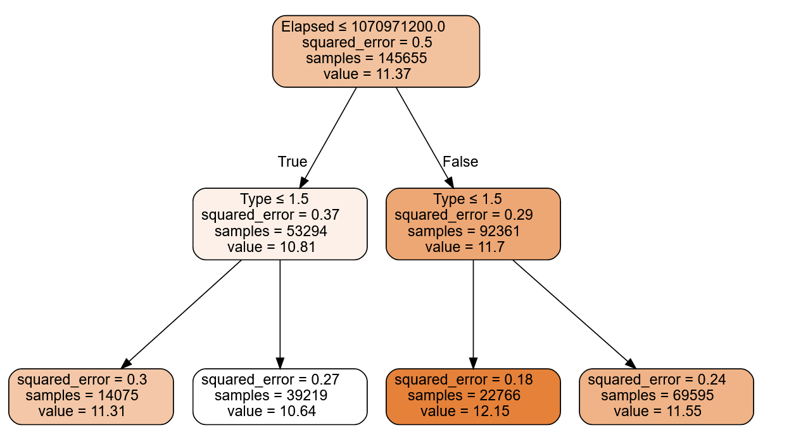
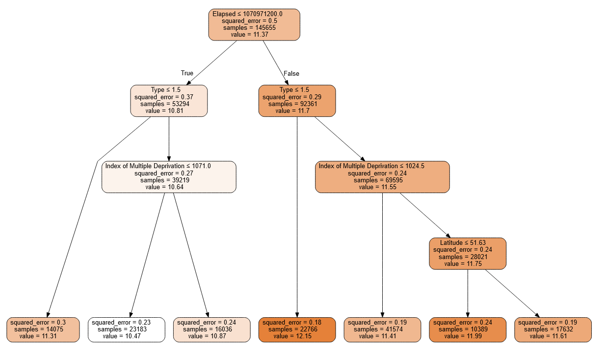
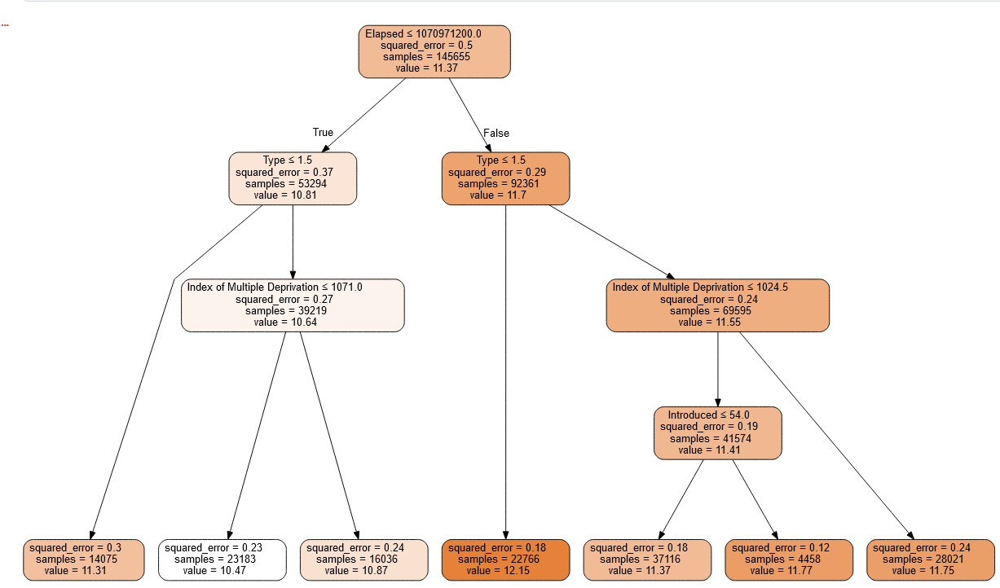
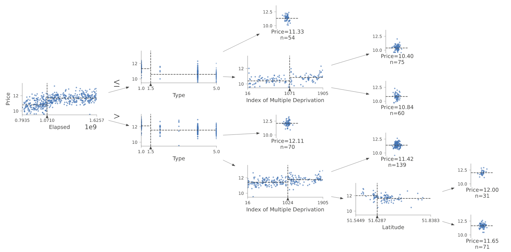

procs = [Categorify, FillMissing]
to = TabularPandas(df, procs, cat, cont, y_names=dep_var, splits=splits)
xs,y = to.train.xs,to.train.y
valid_xs,valid_y = to.valid.xs,to.valid.y
Decision Trees and Random Forests
Using Swansea property prices as a regression example of random forests
- toc: true
- badges: true
- comments: true
- categories: [RF, decision trees, random forests, python]

Decision Trees
A decision tree asks a series of binary questions about the data, whereupon the data is split into two branches. For each of these branches another question can be asked, or a prediction made. The branches continue until a prediction is made. These are created using training data and can subsequently be used with test data.
Decision Trees
m = DecisionTreeRegressor(max_leaf_nodes=4)
m.fit(xs, y);draw_tree(m, xs, size=10, leaves_parallel=True, precision=2)
m = DecisionTreeRegressor(max_leaf_nodes=7)
m.fit(xs, y);
draw_tree(m, xs, size=10, leaves_parallel=True, precision=2)
m = DecisionTreeRegressor(max_leaf_nodes=7,max_depth=2)
m.fit(xs, y);
draw_tree(m, xs, size=10, leaves_parallel=True, precision=2)
m = DecisionTreeRegressor(max_leaf_nodes=7,min_samples_split=30_000)
m.fit(xs, y);
draw_tree(m, xs, size=10, leaves_parallel=True, precision=2)
m = DecisionTreeRegressor(max_leaf_nodes=7,min_samples_leaf=30_000)
m.fit(xs, y);
draw_tree(m, xs, size=10, leaves_parallel=True, precision=2)
# DecisionTreeRegressor?
m = DecisionTreeRegressor(max_leaf_nodes=4)
m.fit(xs, y);
samp_idx = np.random.permutation(len(y))[:500]
dtreeviz(m, xs.iloc[samp_idx], y.iloc[samp_idx], xs.columns, dep_var,
fontname='DejaVu Sans', scale=1.6, label_fontsize=10,
orientation='LR')
def rf_feat_importance(m, df):
return pd.DataFrame({'cols':df.columns, 'imp':m.feature_importances_}
).sort_values('imp', ascending=False)
fi = rf_feat_importance(m, xs)
def plot_fi(fi):
return fi.plot('cols', 'imp', 'barh', figsize=(10,6), legend=False)
plot_fi(fi[:30]);
pd.def rf(xs, y, n_estimators=400, max_samples=100_000,
max_features=0.5, min_samples_leaf=5, **kwargs):
return RandomForestRegressor(n_jobs=-1, n_estimators=n_estimators,
max_samples=max_samples, max_features=max_features,
min_samples_leaf=min_samples_leaf, oob_score=True).fit(xs, y)
m = rf(xs, y)use=fi[fi.imp>.02].cols
xs=xs.loc[:,use]
xs| Elapsed | Year | Type | Index of Multiple Deprivation | Latitude | Average Income | Longitude | Introduced | Postcode | |
|---|---|---|---|---|---|---|---|---|---|
| 0 | 1.634861e+09 | 2021 | 5 | 749 | 51.622696 | 28200.0 | -3.918673 | 1 | 906 |
| 2 | 1.515110e+09 | 2018 | 5 | 749 | 51.622696 | 28200.0 | -3.918673 | 1 | 906 |
| 3 | 1.509322e+09 | 2017 | 5 | 749 | 51.622696 | 28200.0 | -3.918673 | 1 | 906 |
| 4 | 1.468368e+09 | 2016 | 5 | 749 | 51.622696 | 28200.0 | -3.918673 | 1 | 906 |
| 5 | 1.447286e+09 | 2015 | 5 | 749 | 51.622696 | 28200.0 | -3.918673 | 1 | 906 |
| ... | ... | ... | ... | ... | ... | ... | ... | ... | ... |
| 195084 | 8.976096e+08 | 1998 | 1 | 1026 | 51.783459 | 30300.0 | -3.955751 | 1 | 5441 |
| 195085 | 8.931168e+08 | 1998 | 1 | 491 | 51.829727 | 35200.0 | -4.005760 | 1 | 5590 |
| 195086 | 8.574336e+08 | 1997 | 5 | 525 | 51.812675 | 28900.0 | -3.929074 | 1 | 5516 |
| 195087 | 8.492256e+08 | 1996 | 4 | 491 | 51.831928 | 35200.0 | -3.988562 | 1 | 5492 |
| 195088 | 8.071488e+08 | 1995 | 1 | 1303 | 51.817993 | 35200.0 | -3.975582 | 1 | 5484 |
146214 rows × 9 columns
m2 = DecisionTreeRegressor()
m2.fit(xs, y)
# m_rmse(m2, xs, y), m_rmse(m2, valid_xs, valid_y)DecisionTreeRegressor()samp_idx = np.random.permutation(np.shape(y)[0])[:500]
# dtreeviz(m2, xs, y,
# feature_names=xs.columns, target_name=dep_var,X=xs.iloc[5,:])
dtreeviz(m, xs.iloc[samp_idx], y.iloc[samp_idx], xs.columns, dep_var,
fontname='DejaVu Sans', scale=1.6, label_fontsize=10,
orientation='LR')